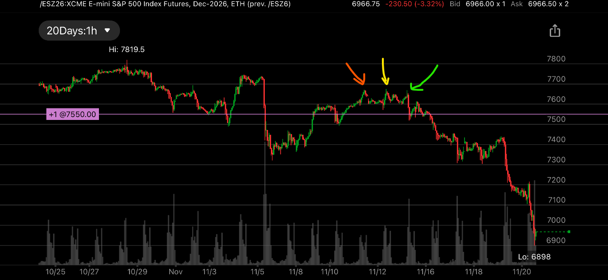
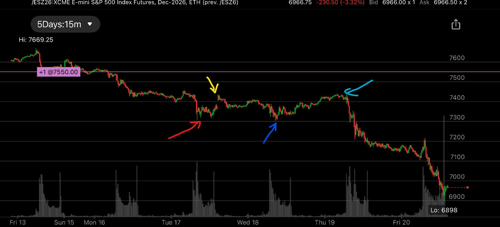

幅度很浅同时时间很短的加速走势不是加速走势
- 如果加速超过原来的范围很浅，并且持续时间很短就返回原来的范围，那么不是加速走势。
- 如果幅度超过很浅，但是持续很久，这个也算是加速


图示: 第一张图是20天的，第二张图是5天的。重点看第二张
- 红色箭头是第一个低点，它勉强算是加速，因为时间更短，但是非常浅，只比原来的低点低了很少，原来的最低点7322， 红色箭头最低7308，仅有15点。
- 红色箭头创新低后，立刻反弹，回到了7322以内，它不但很浅，持续时间很短。估计不到一个小时。所以这个不算加速下跌。
- 它反弹到黄色箭头的高点，然后到蓝色箭头新低，这个是缓慢下跌，这个跌幅更低，7305. 几乎和上一个一样，而且不是加速下跌，而是减速下跌。
- 蓝色到天蓝色箭头，然后突破低点，这个才算是加速下跌了。 远远超过了幅度，然后持续时间更长。 没有反弹回去。